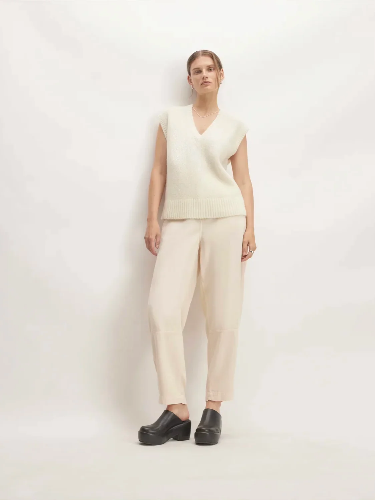
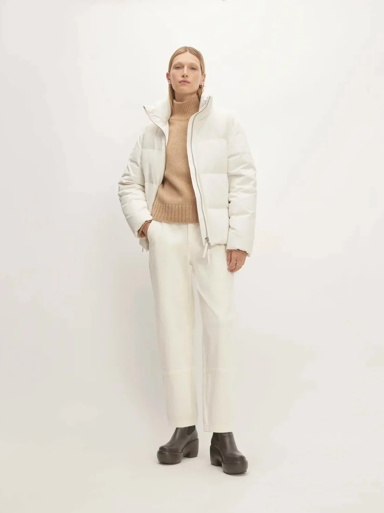

In a season dominated by dark hues, redefine your winter wardrobe with the timeless elegance of winter whites. Whether top-to-toe white outfits, tonal mixing-and-matching, or a key white piece (or two), give your style a breath of fresh air with this list of winter white closet essentials.

Nail the Classics
Start your journey by adding classic statement pieces to your wardrobe. A white oversized sweater, crisp button-down shirt, and tailored trousers are essential building blocks. Mix these classic pieces together for a minimalist look, or use them as a neutral base to anchor bolder textures. The key is to start with high-quality, well-fitting pieces that you can wear season after season.
Monochromatic Magic
Nothing looks more chic than an all-white outfit. Go head-to-toe white by combining different shades like ivory, cream, and eggshell. This tonal approach adds depth and dimension to your outfit. Pair a cozy turtleneck sweater with wide-leg trousers for a sophisticated daytime look, or wear a sleek white slip dress with a structured blazer for an elegant evening outfit.
Keep Warm in White
Stay warm in winter white with cozy knits and outerwear. A white puffer jacket or a long wool coat is a great way to make a statement while staying warm. Don't be afraid to mix different textures like cable knit, faux fur, and shearling. A chunky knit sweater paired with a pleated skirt and knee-high boots creates a cozy and stylish look.

Textures and Layers
Texture is key when styling an all-white outfit. Mix different materials like silk, wool, and cotton to add visual interest. Layering is also essential for staying warm in winter. Try wearing a white turtleneck under a slip dress or layering a chunky knit cardigan over a button-down shirt. The key is to play with different proportions and silhouettes.
Accessorize with Neutrals
If an all-white outfit feels too bold, incorporate neutral accessories. A tan leather belt, brown suede boots, or a beige scarf can break up the white and add a touch of warmth. Gold or silver jewelry also complements white beautifully.